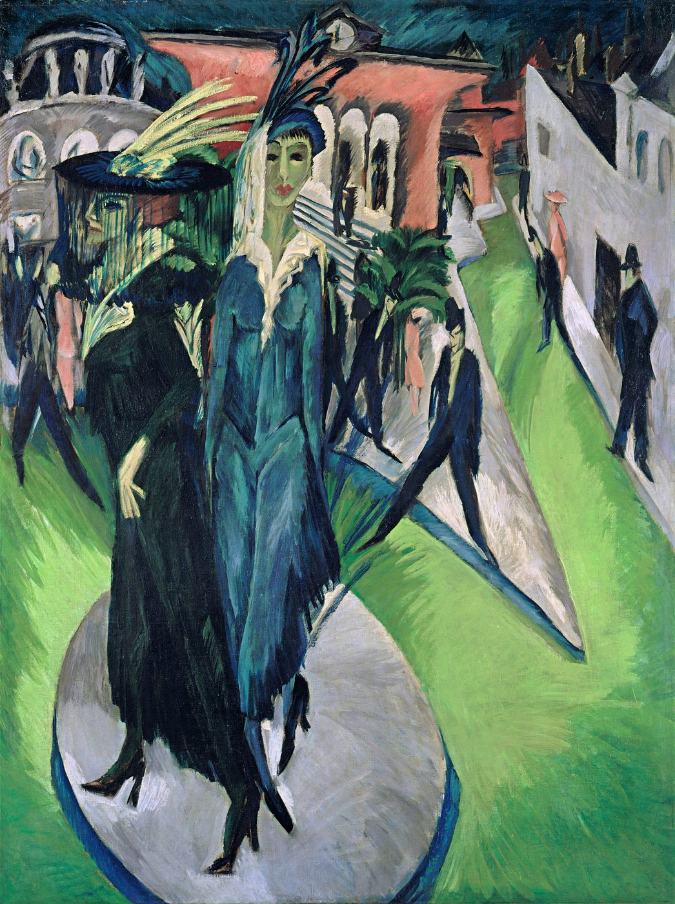
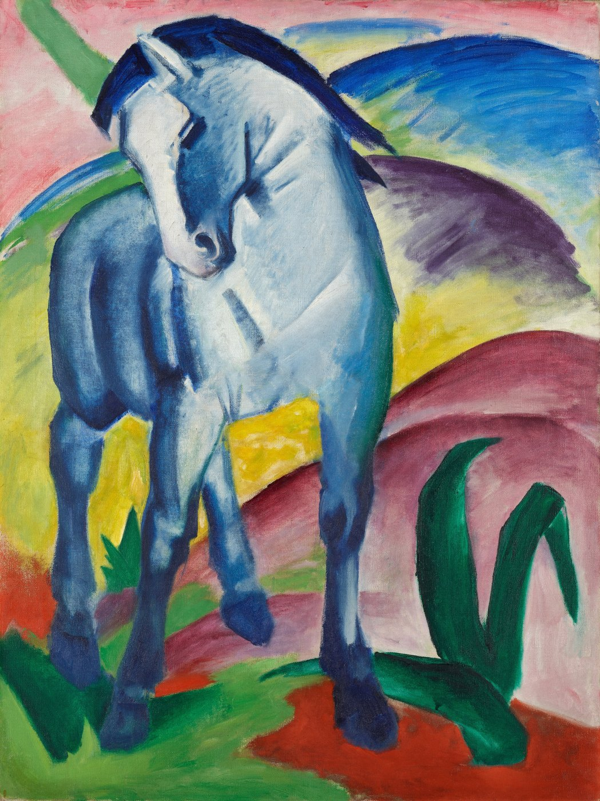
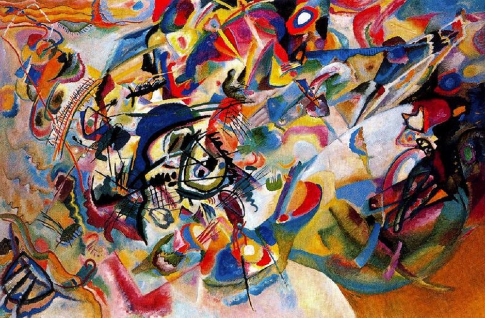

Die Brücke
표현주의(Expressionism)는 눈앞의 대상을 정확히 재현하기보다 감정·불안·정신적 체험에 맞추어 색과 형태를 의도적으로 변형한 20세기 초 국제적 전위미술이다. 독일에서는 1905년 드레스덴의 브뤼케(Die Brücke)와 1911년 뮌헨의 청기사파(Der Blaue Reiter)가 가장 중요한 두 중심을 이루었다.
얼굴·거리·동물의 실제색보다 감정의 강도를 위한 색을 쓴다.
비례와 원근을 깨뜨려 불안·긴장·영적 힘을 강조한다.
기울어진 거리와 납작한 공간이 심리적 불안을 만든다.
도시의 소외, 욕망, 자연의 원초성, 정신적 체험이 중요하다.
“어떻게 보이는가”보다 “어떻게 느껴지는가”가 우선한다.
드레스덴에서 키르히너·헤켈·슈미트로틀루프 등이 기존 아카데미 미술에 반발한다.
뮌헨에서 칸딘스키·프란츠 마르크 등이 정신적·추상적 회화를 모색한다.
급속한 도시화와 근대생활의 속도·익명성·소외가 중요한 주제가 된다.
전쟁은 표현주의 세대에 심각한 단절과 충격을 준다.
표현주의의 격정에 대한 반작용으로 신즉물주의 같은 냉정한 사실적 경향이 등장한다.



| 항목 | 브뤼케 | 청기사파 |
|---|---|---|
| 중심 | 드레스덴 → 베를린 | 뮌헨 |
| 주제 | 도시·누드·거리·현대생활 | 동물·자연·음악·정신성 |
| 형태 | 거칠고 각진 왜곡 | 단순화에서 추상으로 |
| 색 | 직접적·강렬·불안 | 상징적·정신적 |
| 대표 | 키르히너, 헤켈, 슈미트로틀루프 | 칸딘스키, 프란츠 마르크, 아우구스트 마케 |
| 국가·지역·세부 사조 | 지역적 특징 | 대표 화가·제작자 |
|---|---|---|
| 독일 |
| 에른스트 루트비히 키르히너, 에리히 헤켈, 에밀 놀데, 바실리 칸딘스키, 프란츠 마르크, 알렉세이 야블렌스키, 아우구스트 마케 |
| 독일 — 오스트리아 빈의 심리적 변형 |
| 에곤 실레, 오스카 코코슈카 |
| 스웨덴 — 북유럽의 선구 |
| 에드바르 뭉크 |
표현주의는 외부 세계를 닮게 그리는 대신, 불안·도시·영성·원초적 감정을 색과 선의 왜곡으로 드러낸다.
위 국가별 전개 표에 제시한 화가는 상단에 이미 소개되었는지와 관계없이 모두 다시 확인할 수 있게 배치했다. 로컬 이미지 파일이 없는 화가는 이미지 추가 예정 카드로 남긴다.
헤켈은 거친 목판화적 선과 강렬한 색으로 도시와 인체에 깃든 긴장을 드러낸 브뤼케의 핵심 화가다.
놀데는 강한 보색과 두꺼운 붓질로 종교·풍경·인물에 원초적 감정과 불안을 부여했다.
야블렌스키는 단순화된 얼굴과 색면을 통해 초상을 외모의 재현보다 영적·정신적 상태의 상징으로 바꾸었다.
마케는 밝은 색과 단순화된 도시·공원 장면을 통해 청기사파의 색채 리듬과 조화로운 현대성을 보여준다.
실레는 날카로운 윤곽과 불안정한 몸을 통해 성, 죽음, 고립과 자아의 심리적 노출을 극단적으로 드러냈다.
코코슈카는 초상과 인물 관계의 긴장 속에서 심리적 흔들림과 감정의 충돌을 강렬한 붓질로 포착했다.

휘어진 하늘과 얼굴은 풍경을 객관적 배경이 아니라 내면의 공포가 바깥으로 번진 장면으로 바꾼다.
날카로운 인체와 산성적인 색이 근대 도시의 속도와 소외를 드러낸다.
대상을 해체하고 색과 선의 리듬으로 정신적 경험을 표현한다.
동물과 색을 자연의 영적 순수성으로 연결하여 사실적 색채를 넘어선다.